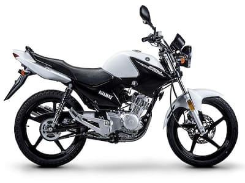
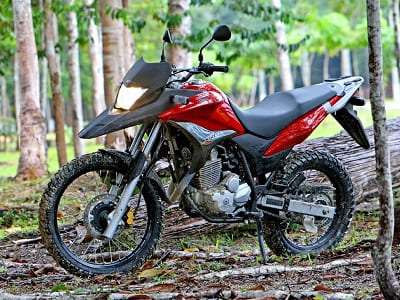
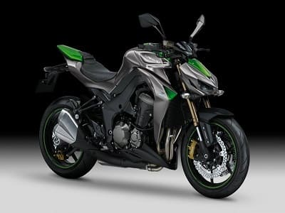

Se caracteriza porque para completar este ciclo, es necesario que el cigüeñal del motor de dos vueltas completas. El motor de cuatro tiempos es el tipo de motor más empleado actualmente por los fabricantes de coches, ya que proporciona un rendimiento y una eficiencia mejores. Sin embargo, también cuenta con un peso mayor y un coste más elevado.
Ventajas✅ y Desventajas❌
| ✅ | ❌ |
| TIENEN MAS AUTONOMÍA (MENOR CONSUMO DE COMBUSTIBLE) Y LA EXPULSIÓN DE GASES ES MENOS CONTAMINANTE. | SUS REPARACIONES EN ALGUNOS CASOS PUEDEN SER MUY COSTOSAS. |
| ESTOS MOTORES SON MUCHO MAS SERENOS LO CUAL REDUCE LAS VIBRACIONES A MAYOR TORQUE. | MOTOR MAS PESADO, Y MENOS POTENTE RESPECTO A UN 2T DEL MISMO CILINDRADO. |
| LA VIDA UTIL DE ESTOS MOTORES PUEDE LLEGAR A SUPERAR LOS 120.000 KM SIN REPARACIONES EN EL MISMO (DEPENDE DEL MANTENIMIENTO Y LA CALIDAD DEL FABRICANTE). | TIENEN POCAS DESVENTAJAS😎 |


